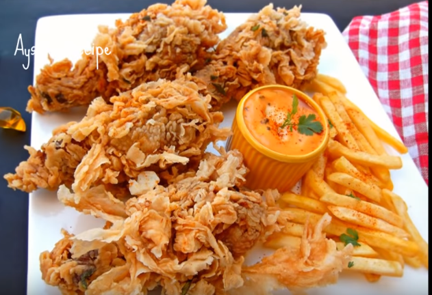
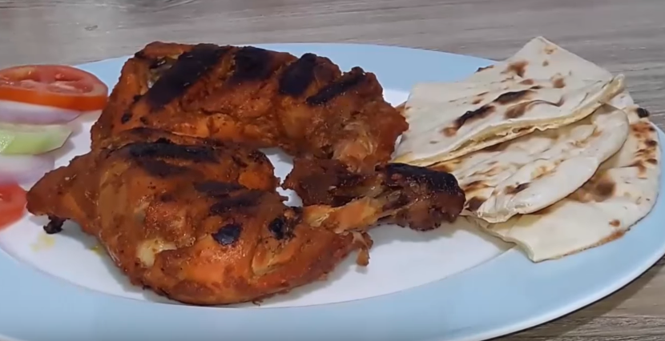
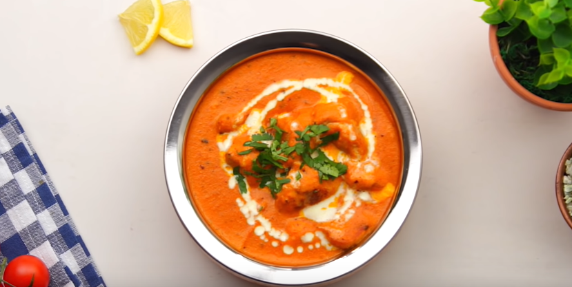
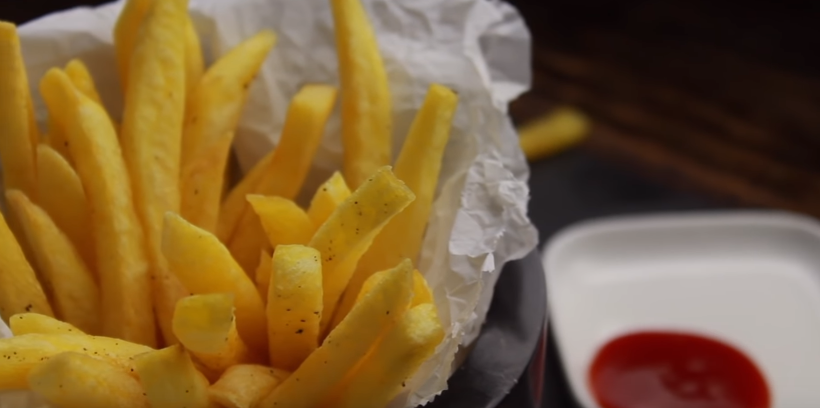
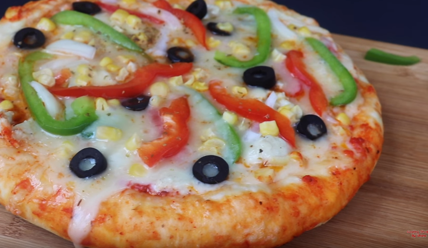
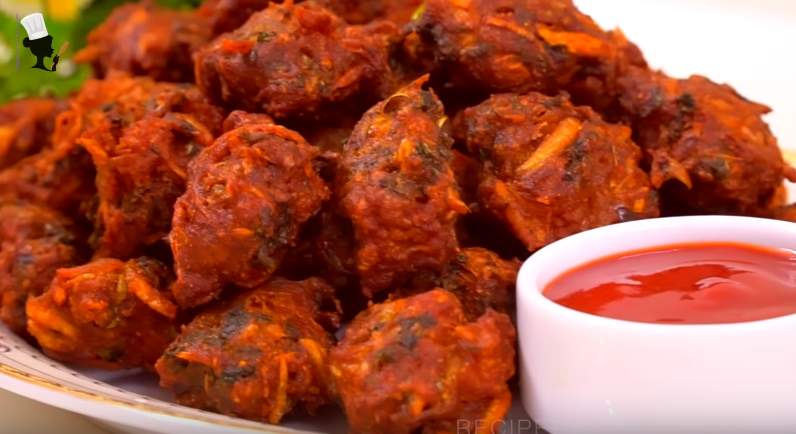
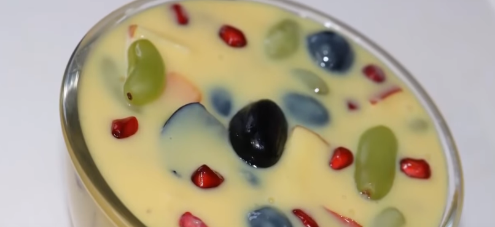
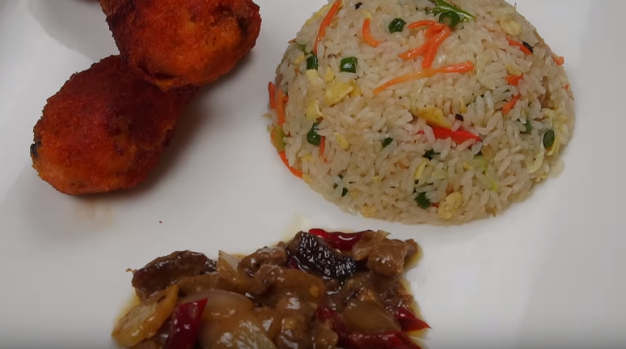
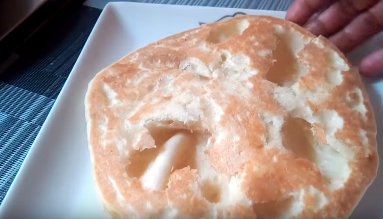
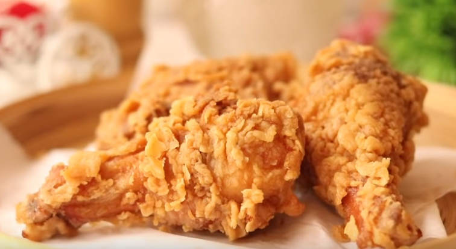

-

গ্রীল চিকেন (বাংলাদেশি হোটেল স্টাইলে) পর্ব-2|| Bangladeshi Grill Chicken || Grill Bangla Hotel Style
chicken 1 kg onion half cup ginger+ garlic + chili powder+ yogurt = 1 tbls each cumin+coriander = half tbls each orange/mixed fruit jam or jelly half tbls pickle soya sauce 1 tbls tomato sauce 1 tbls salt gorom moshala ( 1 bay leaf + 2 sticks of cinnamon + 1 mace + 5/6 cloves + 3 cardamon) oil 3 tbls mustard oil 1/4th cup -

Tandoori Chicken | তান্দুরি চিকেন | Recipe Restaurant Style Tandoori Chicken Bangla
Tandoori Chicken | তান্দুরি চিকেন | Recipe Restaurant Style Tandoori Chicken Bangla -

রেস্টুরেন্ট স্টাইল বাটার চিকেন | Restaurant Style butter chicken | Murgh Makhani Recipe
Ingredients: For chicken marination: Boneless chicken 500 grams salt 1/2 tsp red chili powder 1 tsp coriander powder 1 tsp cumin powder 1 tsp lemon juice 2 tbsp garlic ginger paste 1 tsp yogurt 1/4 cup For gravy: butter 2 tbsp chopped onion 1 medium size garlic ginger paste 1 tbsp green chili 3-4 pieces cardamom 4-5 pieces clove 2 pieces cinnamon sticks 2 small pieces bay leaf 1 piece tomatoes 1/2 kg red chili powder 1 tbsp salt 1/2 tsp water 1 cup cashew nuts 15-16 pieces oil 2 tbsp sugar 1 tsp fenugreek leaves 1 tsp butter 1.5 tbsp heavy cream 4 tbsp
-

রেস্টুরেন্ট স্টাইল ফ্রেঞ্চ ফ্রাইস এর সিক্রেট রেসিপি | Crispy French Fries | French Fry Recipe Bangla
French Fries is probably the most consumed fast food item in the world. The recipe seems very simple but actually, it's a bit tricky to make perfect fried french fries. But if you follow some easy and simple steps, you can also make perfect and crispy French fries every time at home. This is why I have prepared this recipe after trying out tons of different french fries recipes. Hope you like the video! -

চুলায় তৈরি চিকেন প্যান পিঁৎজা || Pizza Recipe On Stove || Bangladeshi Easy Chicken Pan PIzza
flour 2 cups salt olive oil one and half tbls egg 1 milk half cup (light warm) sugar half tbls yeast 2 tsp for chicken topping: ginger and garlic half tsp each oil 1 tbls salt black pepper half tsp chicken 1 cup Pizza Toppings: Pizza Sauce (Recipe: https://youtu.be/6DnUMLFosg8 ) Mozzarella cheese sweet corn bell paper / capsicum black olive onion oregano -

মুচমুচে চিকেন পাকোড়া | Crispy Chicken Pakora Recipe | Chicken Pakora | Easy Chicken Snacks Recipe
কুড়কুড়ে চিকেন পাকোড়া বিকেল বা সন্ধ্যার নাশতার চায়ের সাথে জমবে কেমন,বলুনতো?? চিকেন চপ বা চিকেন বড়া যে নামই হোক না কেন টেষ্ট কিন্তু সুপারহিট! খুবই সহজ এবং তৈরি করতে সময়ও লাগে খুবই কম,ঝটপট তৈরি এই চিকেন স্ন্যাক্স যেকোনো আড্ডার আসর কিংবা মেহমানদারি জমিয়ে তুলবে! তাছাড়া প্রোটিন সমৃদ্ধ এই চিকেন পকোড়া বাচ্চারাও খুবই পছন্দ করবে! 👌😍 তৈরী করতে লাগছে - (Ingredients) # চিকেন কিউব (Chicken cube) - 250 gm # রসুন বাটা (Garlic paste ) - 1/2 Tbs # আদা বাটা (Ginger paste) - 1/2 Tbs # মরিচ গুড়া (Red Chilli powder) - 1/2 Tbs # সাদা সিরকা (White vinegar) - 1 Tbs # লেবুর রস (lemon juce) - 1 Tbs # লবণ (Salt) - to taste # হলুদ গুড়া (Turmeric powder) - 1 tsp # ভাজা জিরা গুড়া (Grilled Cumin Powder) - 1/2 tsp # গরম মসলা গুড়া (Garam Masala) - 1/4 tsp # চাট মাসালা ( Chat Masala) - 1 tsp # কাঁচামরিচ কুচি (Green Chilli Slice) - 3 pcs # বেসন (Gram flour) - 1/2 Cup # চালের গুড়া (Rice flour) - 2 Tbs # ধনে পাতা (Coriander leaf) - 1/2 Cup # পেঁয়াজ কুচি ( Onion Slice) - 1 Cup # বেকিং সোডা (Baking Soda) - 1/4 tsp # সয়াবিন তেল (Soybean Oil) - to fry
-

Fruit Custard Recipe | Healthy Dessert Recipe | How to Make Custard
Fruit Custard Recipe - Healthy Dessert Recipe Milk - 1/2 Ltr Custard Powder - 2 tsp Green grapes black grapes Papaya Apple Pomgranate sugar - 4 to 5 tsp. -

How to Make Crispy French Fries Recipe | Homemade Perfect French Fries Recipe
Learn How to Make McDonald's Style Crispy French Fries Recipe At Home from The Bombay Chef – Varun Inamdar. Make Perfect Restaurant Style Indian Potato French Fries at Home and enjoy the American fast food delicacy with some ketchup and share your experience with us in the comments section below. -
মোগলাই পরোটা তৈরির সহজ রেসিপি || Moglai Porota Recipe || Mughlai Egg Paratha Recipe
আশা করি সবাই খুব ভাল আছেন। আজ আমি আপনাদের জন্য নিয়ে আসলাম মোগলাই পরোটা তৈরির খুব সহজ রেসিপি নিয়ে। আমরা প্রায় সবাই মোগলাই পরোটা পছন্দ করি এবং অনেকেই বাহির থেকে কিনে খাই। কিন্তু আপনি চাইলেই খুব সহজেই আপনার বাসায় বানিয়ে ফেলতে পারেন মজাদার মোগলাই পরোটা। আশা করি আমার রেসিপিটি আপনাদের সবার ভাল লাগবে মোগলাই পরোটা বানাতে যা যা লাগবে উপকরণ/Ingredients 1.5 cups Flour 3 Eggs 4 onions 4 green chili Garam Masala: 1/2 tbsp Chaat Masala: 1/2 tbsp Salt ময়দাঃ ১.৫ কাপ ডিমঃ ৩ টা পিয়াজ কুচিঃ ৪ টা কাঁচামরিচ কুচিঃ ৪ টা গরম মসলাঃ ১/২ চামচ চাট মসলাঃ ১/২ চামচ লবনঃ স্বাদমতন তেলঃ পরিমানমত
-

চাইনিজ চিকেন ভেজিটেবল ফ্রাইড রাইস | Bangla Recipe of Chinese Chicken Vegetable Fried Rice
আমরা কমবেশী অনেকেই চাইনিজ স্টাইলে ফ্রাইড রাইস রান্না করতে পারি। তবে ছোটো ছোটো কিছু ঠিপস ফলো করলেই কিন্তু ফ্রাইড রাইস যে কতটা টেস্টি হবে তা আমি বলে বোঝাতে পারবোনা। আপনারা যারা বিদেশে থাকেন বা বেড়াতে গিয়ে স্ট্রিট ফুড খেয়ে থাকেন, তারা জেনে থাকবেন ফ্রাইড রাইস কিভাবে তৈরী করে। আমি আমার সাধ্যমতো সেই নিয়মগুলিই ফলো করে আপনাদের রেসিপিটি উপহার দেয়ার চেষ্টা করেছি। তৈরী করতে লাগছে - চাল সেদ্ধ করতে - সুগন্ধি চাল ১ কাপ - লবণ ১ চা চামুচ - রান্নার তেল ০.৫ চা চামুচ মাংস মেরিনেশনে - হাড় ছাড়া মুরগির মাংস ০.৫ কাপ - সয় সস ১ চা চামুচ - গোল মরিচের গুঁড়ি ০.৫ চা চামুচ - কর্ণ ফ্লাওয়ার ১ চা চামুচ রান্না করতে - ডিম ২ টি - ক্যাপসিকাম ০.৫ কাপ - বাঁধাকপি ০.৫ কাপ - বরবটি ০.৫ কাপ - গাজর ০.৫ কাপ - রসুন কুচি ১ টেবিল চামুচ - কাঁচা মরিচ ৭/৮ টি - ১০০ গ্রাম বাটার - গোল মরিচ ১ চা চামুচ - ফিশ সস ২ টেবিল চামুচ - সয় সস ১ টেবিল চামুচ - রসুন বাটা ১ চা চামুচ - চিনি ১ চা চামুচ -

Soft Butter Naan Without Yeast বাটার নান | Bangladeshi Easy Recipe of Butter Naan Butter Nan Recipe
Soft Naan Naan Best Naan Recipe Without Yeast How to make Tawa Naan Recipe (No Oven No Yeast) by Kitchen With RB. A Step by Step Complete Recipe of Naan without Tandoor and Yeast. Naan Recipe without yeast at home. Homemade Naan Recipe on Tawa. Without Tandoor Naan Recipe. Butter Naan Recipe Ingredients 3 cup flour ½ tspn Baking Soda & 1/4 tspn Baking Powder ½ tspn salt 2 tspn suger 2-3 tblspn tspn vegetable oil ½ cup yogurt warm water add to need For naan ½ tspn salt + water mix & Butter -

রেস্টুরেন্ট স্টাইলের পারফেক্ট ক্রিসপি চিকেন ফ্রাই রেসিপি ॥ Fried Chicken Recipe ॥ Chicken Fry Recipe
রেস্টুরেন্ট স্টাইলের পারফেক্ট রেস্টুরেন্ট স্টাইলের পারফেক্ট ক্রিসপি চিকেন ফ্রাই রেসিপি ॥ Fried Chicken Recipe ॥ Chicken Fry Recipe
-
গ্রীল চিকেন (বাংলাদেশি হোটেল স্টাইলে) পর্ব-2|| Bangladeshi Grill Chicken || Grill Bangla Hotel Style
chicken 1 kg onion half cup ginger+ garlic + chili powder+ yogurt = 1 tbls each cumin+coriander = half tbls each orange/mixed fruit jam or jelly half tbls pickle soya sauce 1 tbls tomato sauce 1 tbls salt gorom moshala ( 1 bay leaf + 2 sticks of cinnamon + 1 mace + 5/6 cloves + 3 cardamon) oil 3 tbls mustard oil 1/4th cup -
Tandoori Chicken | তান্দুরি চিকেন | Recipe Restaurant Style Tandoori Chicken Bangla
Tandoori Chicken | তান্দুরি চিকেন | Recipe Restaurant Style Tandoori Chicken Bangla -
রেস্টুরেন্ট স্টাইল বাটার চিকেন | Restaurant Style butter chicken | Murgh Makhani Recipe
Ingredients: For chicken marination: Boneless chicken 500 grams salt 1/2 tsp red chili powder 1 tsp coriander powder 1 tsp cumin powder 1 tsp lemon juice 2 tbsp garlic ginger paste 1 tsp yogurt 1/4 cup For gravy: butter 2 tbsp chopped onion 1 medium size garlic ginger paste 1 tbsp green chili 3-4 pieces cardamom 4-5 pieces clove 2 pieces cinnamon sticks 2 small pieces bay leaf 1 piece tomatoes 1/2 kg red chili powder 1 tbsp salt 1/2 tsp water 1 cup cashew nuts 15-16 pieces oil 2 tbsp sugar 1 tsp fenugreek leaves 1 tsp butter 1.5 tbsp heavy cream 4 tbsp